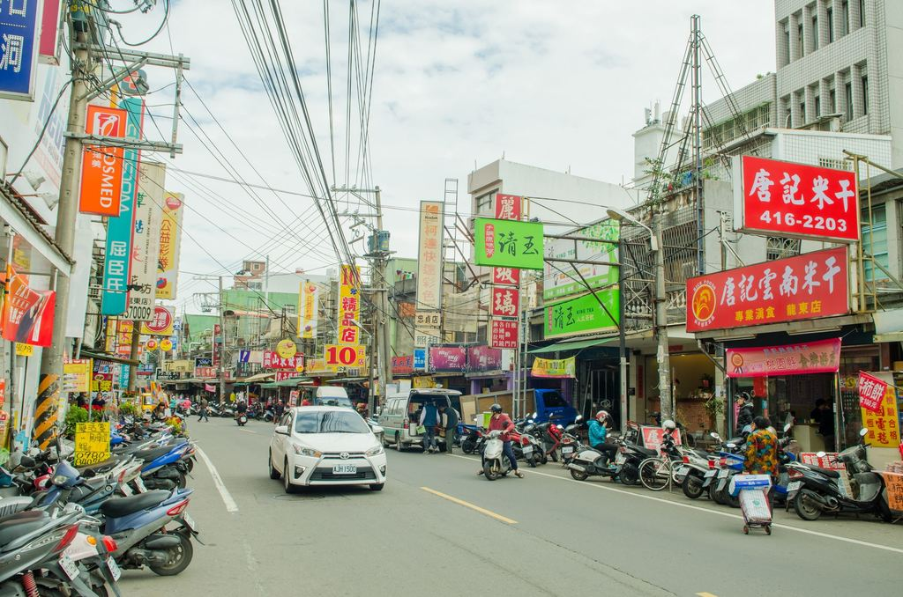

平鎮有著濃厚的滇緬文化，忠貞商圈集結了米干、破酥包、豌豆粉等道地好味道。具二百多年歷史的平鎮褒忠祠，供俸客家先賢義民爺，每年農曆七月會以賽神豬、放水燈、踩街繞境等方式盛大謝神。
1950年代撤退來台的滇緬軍民在龍岡地區落地生根，為了生計，許多滇緬移民賣起了家鄉味，香腸臘肉、醬菜、雲南米干、雲南豌豆粉、涼拌青木瓜絲，及雲南大薄片等，飄洋過海後發揚光大，成了當地最具特色的美食料理。現在商圈內隨處可見米干店，這種以在來米漿淋在大鍋上，薄薄一片蒸熟後，再用大骨熬湯，放上肉片與現煮蛋包，加上自製的醬汁，即是一碗讓人吃過就難忘的米干。
